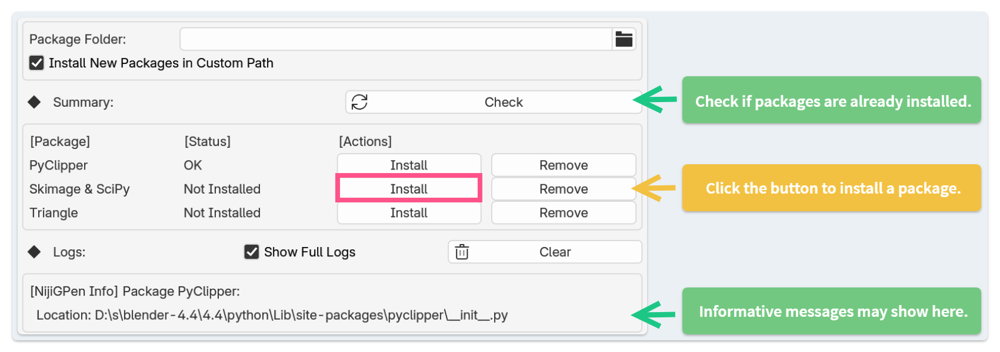
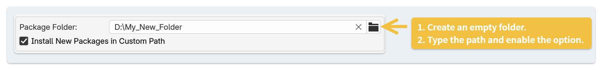

Python Packages #
NijiGPen's functionality relies on some third-party Python packages, which have to be separately downloaded and installed. If you have no experience with Blender add-ons that have similar requirements, it is strongly suggested to read this page before using the add-on.
Are Packages Required? #
This add-on includes functionalities that do not require Python packages, such as PSD multi-layer rendering, brush/palette import, canvas tilting, and stroke rearrangement. Users who only use these features can skip this tutorial.
Otherwise, installing Python packages manually is required. Among packages, PyClipper and SciPy & SkImage are necessary. Triangle is optional.
Package Installation #
Package management should be done through the add-on's Preferences panel. The table lists three Python packages. Click the "Check" button to see if they are already installed. The Logs area will show more detailed information.

Default Method: Install inside Blender #
By default, the Package Folder option is not set. Simply click the "Install" button, and the package will be downloaded to the Blender's installation folder.
During installation, Blender may stop responding for a while, which is normal since downloading takes time. Then, the status field should become "OK".
If no error messages are shown, but the status does not change to "OK", please restart Blender and click the "Check" button again. If the status still does not change, then the installation failed.
One common reason for an installation failure is that the add-on does not have access to write files to the Blender installation folder, which may be a system folder. Please try the following solutions:
- Start the Blender program as Administrator.
- Refer to the next section and install to a different folder.
Alternative Method: Install to a Custom Location #

The packages can also be installed to an empty folder outside Blender. To do that, create a folder and type its path to Package Folder field. With the option Install New Packages in Custom Path enabled, Python packages will be downloaded to the assigned folder.
There is also a path provided in the drop-down list, which is the common place for the current system user to install Python packages.
Package Removal #
The removal of Python packages follows a similar process as installation, through clicking the "Remove" button in the panel.
If the packages are installed in a custom folder, please visit that folder in the file explorer and delete related files manually.
Troubleshooting #
Please understand that Python package management is a relatively complex process since this add-on needs to support multiple versions of Blender and operating systems, including Windows, macOS, and Linux. If you encounter an unexpected problem that is not addressed in this tutorial, please submit an issue on GitHub.
When an error happens, the detailed information may appear in the Logs area, which may indicate the cause.
If the logs do not show anything and Blender has not responded for a long time, it may be a networking problem. Please make sure that you are connected to the internet.
Appendix #
The Impact of Package Locations
| Package Location | Pros | Cons |
|---|---|---|
| Blender Program | Does not interfere with other Blender versions / other software. | Packages are not shared among different versions of Blender. May required admin permission. |
| System User | Shared by multiple versions of Blender. | Also shared by other software in the system, which may cause conflicts. |
| Custom Folder | Shared by multiple versions of Blender. Does not conflict with other software. | Removal requires deleting files manually. |
Summary of Package Usages
The table below lists the packages required for each type of operation.
| Function | PyClipper | SciPy & SkImage | Triangle |
|---|---|---|---|
| Polygon (Bool, Offset & Sweep) | Yes | ||
| Shading Calculation | Yes | Yes | |
| Line Fitting | Yes | ||
| Line Shaping (Pinch, Taper) | |||
| Smart Fill | Yes | Yes | |
| Mesh Generation [See Below] | Yes | Optional | Optional |
| Rigging Using Mesh | |||
| Rigging Using Hints [See Below] | Optional | Yes | |
| Line Art Import | Yes | ||
| Color Image Import | Yes | Yes | |
| Brush Import | |||
| SVG & Palette Paste | |||
| PSD Render |
Mesh Generation: Only pyclipper is a mandatory requirement. However, the other packages are optional to enable some enhancements of the Interpolation operator:
scipyenables an advanced solver to calculate vertex depth.triangleenables an option to improve mesh quality, i.e., more uniformly distributed vertices.
Rigging Using Hints: pyclipper is required only when using lasso-shaped hints.